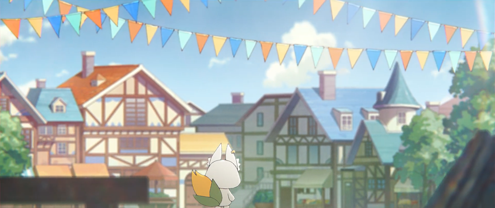
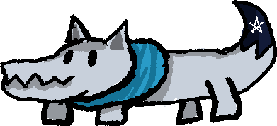
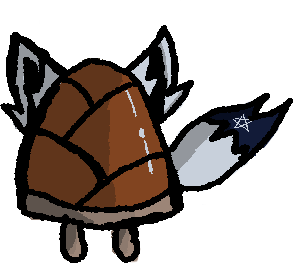
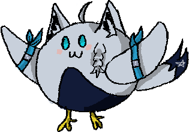
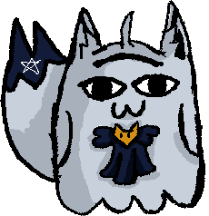
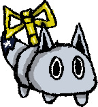
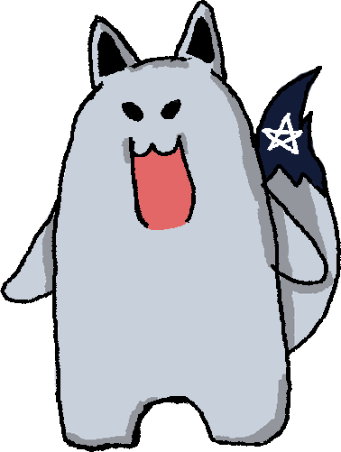
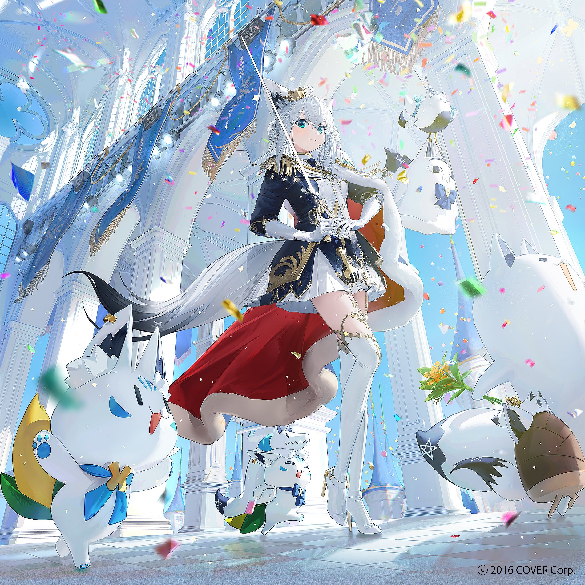

For best experience: Play this game on 1440px wide display or greater.
How to Play
Clear the game by collecting points to bring back all the citizens of FBKingdom. Press spacebar or mouse left click to avoid obstacles.
Credits
This is a nonprofit unofficial fan game of Hololive Production talents. All characters and other intellectual properties found in this game belong to Cover Corp. The in-game characters are not intended to wholly accurate representations of the Vtubers. Support the official right holders, and all wonderful talents of Hololive.
Music
Expedition BGM: Koseki Bijou
Lobby BGM: Shirakami Fubuki
Menu BGM: Shirakami Fubuki
Images
Expedition Background Image: Screen capture taken from Koseki Bijou VOD intro
Game Clear Image: @Laxxxli
Other Images(fbkingdom citizens, running sukonbu, enemies ): Drawn by Me(Kuuhaku)
Videos
Menu Background Video: Trimmed from Shirakami Fubuki yt video
Start Game Cinematic: Trimmed from Shirakami Fubuki yt video
Notice
This is a nonprofit unofficial fan game of Hololive Production talents. All characters and other intellectual properties found in this game belong to Cover Corp. The in-game characters are not intended to wholly accurate representations of the Vtubers. Support the official right holders, and all wonderful talents of Hololive. Thank you for playing!
Welcome to FBKingdom
Due to a certain incident the citizens of FBKingdom got scattered all over the Hololand. Go on expeditions to earn points and bring back all the citizens and make FBKingdom lively and complete again.







0
Distance Travelled: 0
Points earned: 0
Press space or click left mouse button to jump.
Distance Travelled: 0
Points Earned: 0

Game Cleared
You have saved all the citizens of FBKingdom. Thank you for playing